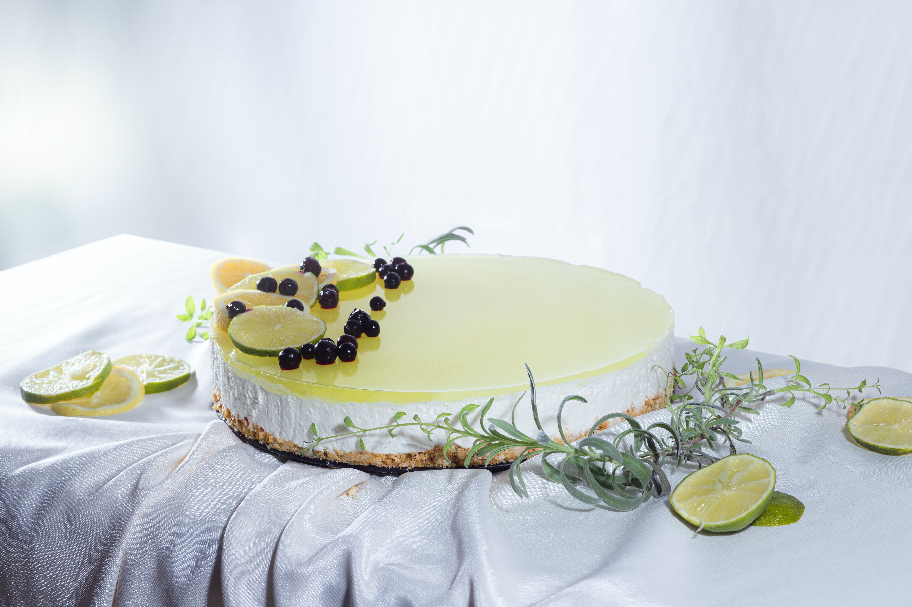

Lemon Cheesecake

Ingredients
- 1 (18.25 ounce) package yellow cake mix
- 1 (3.5 ounce) package instant vanilla pudding mix
- 1 cup milk
- ⅓ cup vegetable oil
- 3 eggs
- 6 egg yolks
- 1 ½ cups white sugar
- 1 cup butter
- ¼ cup all-purpose flour
- 1 cup fresh lemon juice
- 4 tablespoons grated lemon zest
Steps
-
Preheat oven to 350 degrees F (175 degrees C). Grease and flour three 9 inch round cake
layer pans.
-
Combine the cake mix, instant vanilla pudding, milk, vegetable oil and the 3 whole eggs. Mix
until blended. Pour batter into the prepared pans.
-
Bake at 350 degrees F (175 degrees C) for 25 minutes or until cakes test done. Set aside
cakes to cool.
-
To Make Lemon Cheese Filling: In the top half of a double boiler combine the egg yolks,
white sugar, butter or margarine, flour, grated lemon rind and lemon juice. Cook stirring
constantly over medium heat until mixture is thick enough to spread. Let cool before
spreading between cooled cake layers.